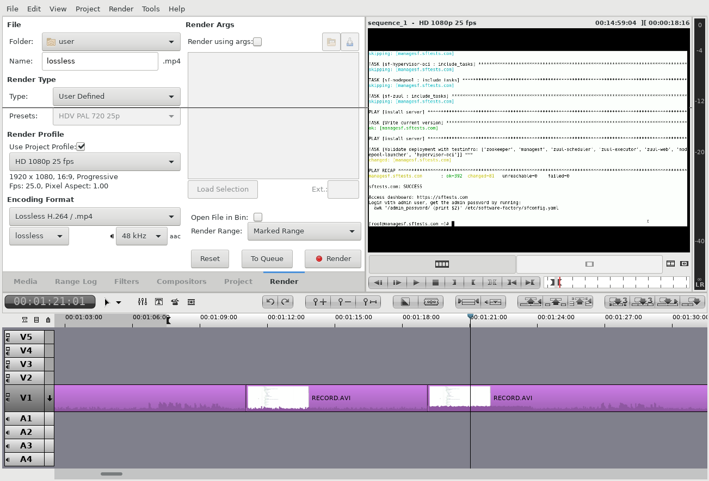

This post documents my process to record video of new features.
Prepare the environment
The first step is to cherry-pick the feature and verify it works as expected. I do some tests to get comfortable with the content and rehearse before recording. Then I revert the environment to a clean state and setup the window environment.
Record
I record the desktop and microphone using this ffmpeg command:
ffmpeg -f alsa -i pulse -f x11grab -s 1920x1080 -r 25 -i :0+0 -q:v 8 record.mp4
It may takes a few attempts to get a satisfactory result.
Edit
Then I edit the recording to remove the blank content. For example I cut the actions that takes more than 10 seconds to complete. Using flowblade video editor press 'I' and 'O' to mark section and then click the 'slice out' button.
Finaly I render a lossless.avi file using the "HD 720p 25 fps" profile and "Lossless H.264 / .mp4" format. This is because the webm export is sub-optimal and this export method is pretty fast.
Final encoding
Base on this vp9 encoding guide I encode the final video using this command:
BITRATE=500K ffmpeg -i lossless.mp4 -c:v libvpx-vp9 -pass 1 -b:v ${BITRATE} -threads 8 -speed 4 -r 25 -tile-columns 6 -frame-parallel 1 -an -f webm /dev/null ffmpeg -i lossless.mp4 -c:v libvpx-vp9 -pass 2 -b:v ${BITRATE} -threads 8 -speed 1 -tile-columns 6 -frame-parallel 1 -auto-alt-ref 1 -lag-in-frames 25 -c:a libvorbis -b:a 64k -f webm out.webm
The resulting file is well compressed, about 3MB per minutes, and usable with the native html5 video player.